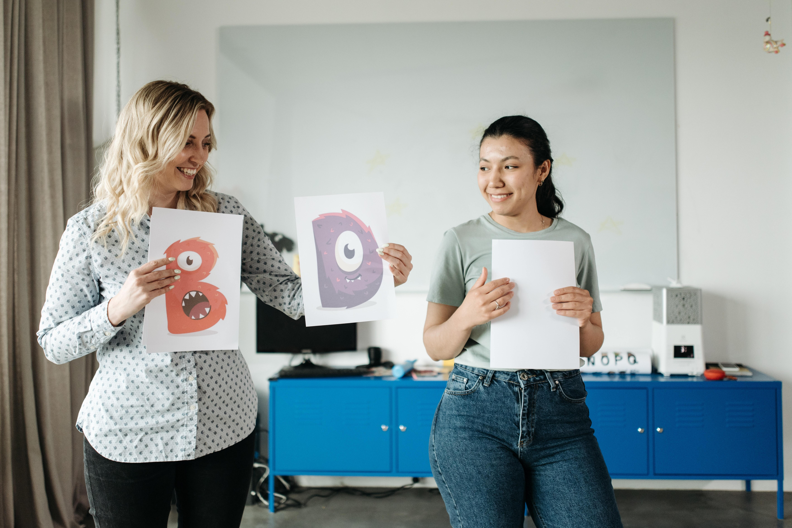
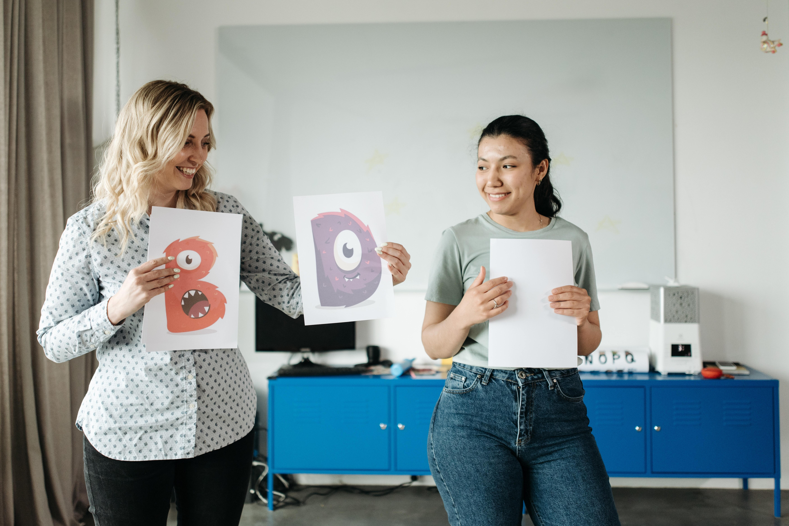
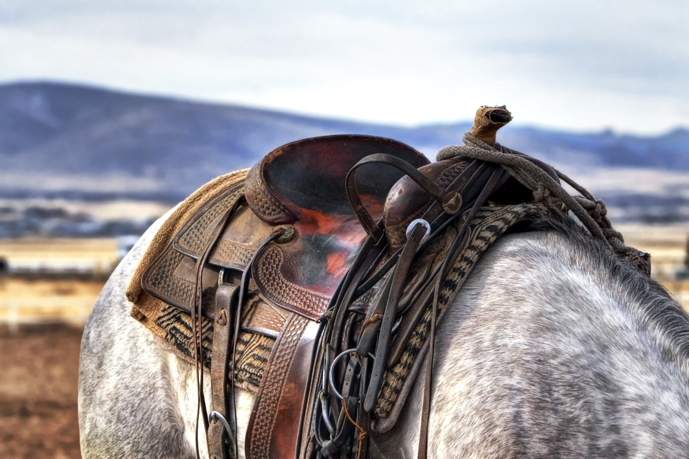

Actualmente somos 3 profesoras: Manuela, Agustina y Silvinha, las 3 somos recibidas de enseñanza en la Udelar, con posgrados en psicologia y experiencia en varios talleres de multiples escuelas.

Actualmente somos 3 profesoras: Manuela, Agustina y Silvinha, las 3 somos recibidas de enseñanza en la Udelar, con posgrados en psicologia y experiencia en varios talleres de multiples escuelas.

Tambien contamos con nuestro taller dedicado a costuras para equinos, mantas para diferentes animales de campo, diseños y materiales para cada pedido. Respecto a dicho taller, Silvinha se encarga personalmente de hacer entregas, y se va una vez cada semana con el grupo a una chacra en la cual es el taller donde Silvinha hace todos los arreglos de la costura y el grupo puede disfrutar de paseos recreativos con los caballos o ponys del campo, logrando distenderse de la ciudad y poder disfrutar un rato del silencio y cambiar el aire y el ambiente personal de cada uno.
